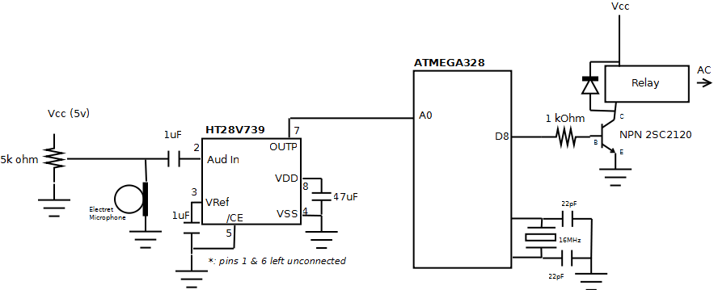
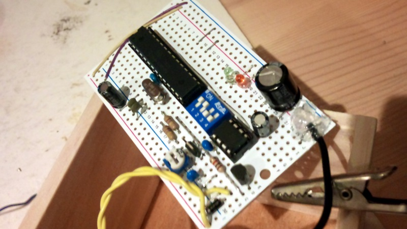
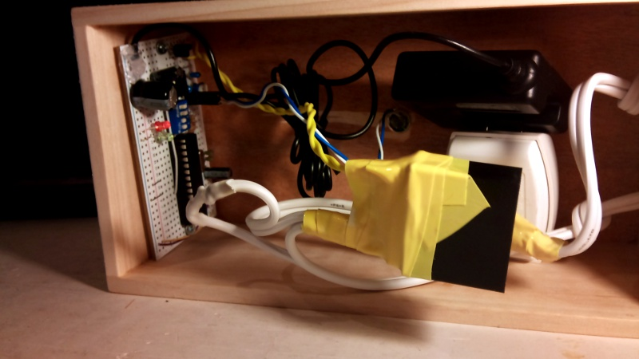
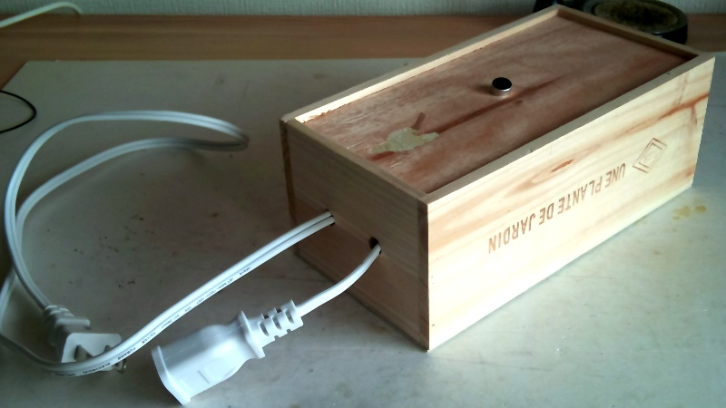

Basically an re-implementation of that
http://www.instructables.com/id/How-to-make-a-Clap-Clap-on-Clap-Clap-Off-switch-/
Just a pretext to play with OpAmp and microphone...
See also the more recent version using Attiny 2313 : Clapclap 2313 or Attiny13 : Clapclap 1386
Schema

Schema : low quality sorry, I just had Dia under my hand...
Components
- ATMEGA 328 : too big for that but only those available having an ADC.
- 0.1 uF anti ripple the closest possible to Vcc/GND pins
- Crystal 16 MHz and 2 capacitor 22pF
- HT82V739 HOLTEK audio amp, very nice to use, very few components
- 2x 1 uF capacitor (the one before the input is mandatory at least !)
- 47 uF anti-ripple capacitor
- Electret microphone
- 5kOhm variable resistance to tune the micro amplification and the sensitivity
- Power stuff like :
- 1 cheap cell phone charger (5v 750 mA 500 JPY at ドンキホッテ)
- A big cap anti-ripple 100 uF
- No regulator, the cell phone charger is already regulated it seems to 5.30 V
- Additional bling bling :
- leds and resistor for debuging
- Resistor and transistor NPN to drive the relay
- Relay [９４２Ｈ－２Ｃ－５ＤＳ] 5v 5A 125 V
- Internal resistor is 47 ohm so at 5v it draws about 100 mA (confirmed by measurement)
- 1 diode to avoid reverse current generated when relay turns off
Pictures

The board. Back to front the uC, on the left the quartz and capacitors, then a on board switch for debug led, the 8 pins amp and the transistor and diode going to the relay.

In the box ... (the black cube mommified in yellow tape is the relay, on the right is the cell phone charger used as power source)

... and the box itself.
Code
One can find that also on my google code account
/*
ardClapClap
Clap twice, it triggers on/off a relay and whatever is plugged on.
http://kalshagar.wikispaces.com/Clapclap
This code is in the public domain.
*/
#define DEBUG
#define LED_PIN_CLAP 6
#define LED_PIN_CLAPCLAP 7
#define RELAY_PIN 8
void setup() {
#ifdef DEBUG
Serial.begin(9600);
#endif
pinMode(LED_PIN_CLAPCLAP, OUTPUT);
pinMode(LED_PIN_CLAP, OUTPUT);
pinMode(RELAY_PIN, OUTPUT);
}
#define CLAP_THRESHOLD 600
#define CLAP_GAP_IN_MS 300
#define CLAP_GAP_TOLERANCE 65
#define CLAP_GAP_MIN (CLAP_GAP_IN_MS - CLAP_GAP_TOLERANCE)
#define CLAP_GAP_MAX (CLAP_GAP_IN_MS %20 CLAP_GAP_TOLERANCE)
unsigned long mLastClap;
boolean mRelayStatus = false;
void loop() {
int sensorValue = analogRead(0);
if (sensorValue > CLAP_THRESHOLD){
unsigned long vNow = 0;
vNow = millis();
unsigned long vGap = vNow - mLastClap;
#ifdef DEBUG
Serial.print("clap ! mLastClap = ");
Serial.print(mLastClap, DEC);
Serial.print(" ; vNow = ");
Serial.print(vNow, DEC);
Serial.print(" ; vGap = ");
Serial.println(vGap, DEC);
#endif
//blink "clap"
digitalWrite (LED_PIN_CLAP, HIGH);
delay(50);
digitalWrite (LED_PIN_CLAP, LOW);
if (
//initialized
mLastClap != 0
//when overflow, last is after current, discard simply
//and ensure that vGap is signed correctly
&& mLastClap < vNow
//within range of duration and tolerance
&& vGap >= CLAP_GAP_MIN && vGap <= CLAP_GAP_MAX
){
//switch relay status
mRelayStatus = !mRelayStatus;
digitalWrite(RELAY_PIN, (mRelayStatus ? HIGH : LOW));
//blink "clap-clap"
digitalWrite (LED_PIN_CLAPCLAP, HIGH);
delay(500);
digitalWrite (LED_PIN_CLAPCLAP, LOW);
#ifdef DEBUG
Serial.print("Calp-clap with delay of: ");
Serial.println(abs(vNow - mLastClap), DEC);
#endif
//avoid triple clap to on-off stuffs, reset the last clap
//would be better with a flag "triggered/dormant" but this will
//do the trick in most the cases
mLastClap = 0;
}
else {
//store last time
mLastClap = vNow;
}
}
}
Links